Code
# Imports
import arviz as az
import jax
import jax.numpy as jnp
import numpyro
from numpyro import distributions as dist
az.output_notebook()
import matplotlib.pyplot as pltToday, we’ll be exploring probabilistic progamming languages (PPL) and how you can utilize Python to build (and perform inference on) statistical models.
This introduction will mainly focus on NumPyro, but the ideas are transferable to other PPL’s.
To understand PPL, we need to understand how to build statistical models.
We will begin with an example from astronomy:
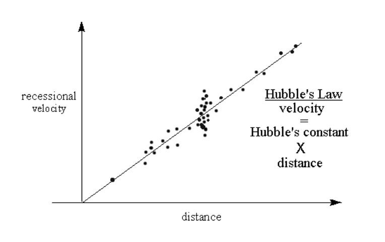
\[\Large{v=H_0 D}\]
What prior beliefs/knowledge do we have with regards to the parameters of interest? We need to specify this with a prior distribution. For example:
\(\text{Prior} \equiv p(\text{parameters})\)
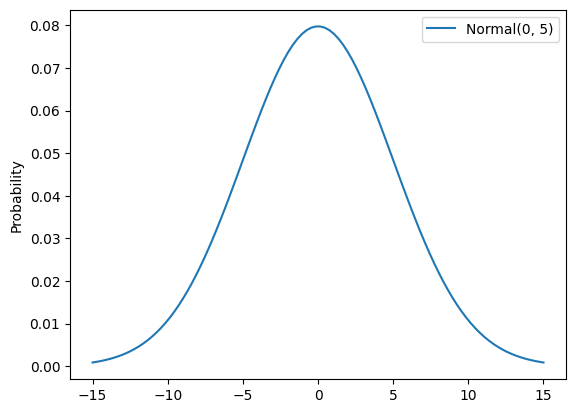
In order to compare our choice of parameters to the observed data, we need to know how likely the observed data is given the parameters. This is where our likelihood distribution comes in
\(\text{Likelihood} \equiv p(\text{Data} | \text{parameters})\)
What is our updated belief about our parameters, given the data? This is the posterior distribution of the parameters.
\(\text{Posterior} \propto p(\text{Data} | \text{parameters}) p(\text{parameters})\)
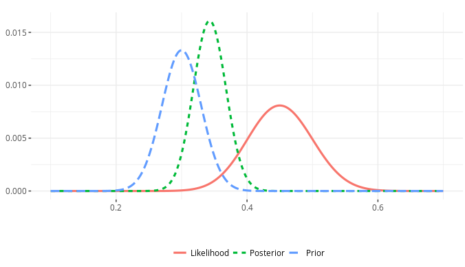
In our example, the latent variable is \(H_0\), the Hubble constant. Our posterior distribution would be
\(p(H_0 | v,\ D) \propto p(v,\ D | H_0) p(H_0)\)
This is where a PPL comes in. A PPL usually has the following capabilities:
There are many! The ones that are most popular in the Python ecosystem are - PyStan - PyMC - Pyro - NumPyro
Each has their own benefits and drawbacks. Today, we’ll focus on NumPyro. Let’s see how to implement our Hubble model in NumPyro
# Imports
import arviz as az
import jax
import jax.numpy as jnp
import numpyro
from numpyro import distributions as dist
az.output_notebook()
import matplotlib.pyplot as pltFirst, let’s implement a simulator given a distance and choice of Hubble constant.
def hubble_law(h0, d):
return h0 * dNow, let’s generate some data and add noise
key = jax.random.key(5)
d = jax.random.uniform(key, 50, minval=0, maxval=25) # Mpc
d = d.sort()
h0 = 67 # km/s/Mpc
v = hubble_law(h0, d)
err_fac = 100
verr = jax.random.normal(key, d.shape) * err_fac
verr_obs = jax.random.normal(jax.random.key(6), d.shape) * err_facplt.errorbar(d, v + verr, jnp.abs(verr_obs), fmt="o")
plt.xlabel("Mpc")
plt.ylabel("km/s")
plt.plot(d, v)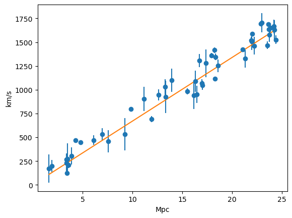
def model(d, verr, v):
h0 = numpyro.sample("h0", dist.Uniform(60, 80))
with numpyro.plate("data", len(d)):
pred = numpyro.deterministic("pred", hubble_law(h0, d))
numpyro.sample("loglike", dist.Normal(pred, verr), obs=v)numpyro.render_model(
model, model_args=(d, jnp.abs(err_fac), v), render_distributions=True
)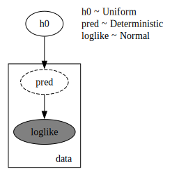
Finally, we can sample the posterior of our model to learn about \(H_0\)
# I'll use the No U-Turn Sampler (NUTS) and run 5 chains in parallel using SIMD vectorization
mcmc = numpyro.infer.MCMC(
numpyro.infer.NUTS(model),
num_warmup=100,
num_samples=1000,
num_chains=5,
chain_method="vectorized",
)
mcmc.run(key, d, jnp.abs(err_fac), v)sample: 100%|███████████████████████████████████████████████████████████████████████████████████████████████████████████████████████████████████████████████████████████████████| 1100/1100 [00:03<00:00, 359.40it/s]mcmc.print_summary()
mean std median 5.0% 95.0% n_eff r_hat
h0 67.01 0.86 67.01 65.56 68.43 1920.88 1.00
Number of divergences: 0mcmc.get_samples()["h0"]Array([67.11925 , 66.401085, 66.892006, ..., 66.564575, 66.7084 ,
65.904045], dtype=float32)We can use the ArviZ package to explore the results of our inference. This package works with most of the PPL’s available, so it is a great tool to learn!
inf_data = az.from_numpyro(mcmc)
az.summary(
inf_data,
var_names=["~pred*"],
filter_vars="regex",
)| mean | sd | hdi_3% | hdi_97% | mcse_mean | mcse_sd | ess_bulk | ess_tail | r_hat | |
|---|---|---|---|---|---|---|---|---|---|
| h0 | 67.009 | 0.863 | 65.318 | 68.602 | 0.02 | 0.014 | 1935.0 | 2201.0 | 1.0 |
az.plot_trace(
inf_data,
backend="matplotlib",
compact=False,
var_names=["~pred*"],
filter_vars="regex",
combined=False,
)array([[<Axes: title={'center': 'h0'}>, <Axes: title={'center': 'h0'}>]],
dtype=object)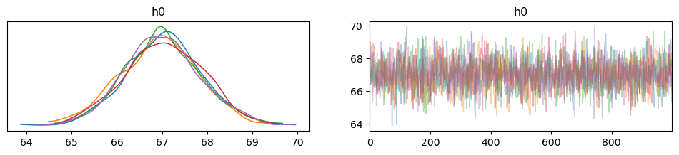
This is also a linear regression example, but it goes much more in depth with NumPyro’s capabilities
For this example, we will use the WaffleDivorce dataset from Chapter 05, Statistical Rethinking [1]. The dataset contains divorce rates in each of the 50 states in the USA, along with predictors such as population, median age of marriage, whether it is a Southern state and, curiously, number of Waffle Houses.
import os
import numpyro
import numpyro.distributions as dist
import pandas as pd
import seaborn as sns
from jax import random, vmap
from jax.scipy.special import logsumexp
from numpyro import handlers
from numpyro.diagnostics import hpdi
from numpyro.infer import MCMC, NUTS
plt.style.use("bmh")DATASET_URL = "https://raw.githubusercontent.com/rmcelreath/rethinking/master/data/WaffleDivorce.csv"
dset = pd.read_csv(DATASET_URL, sep=";")
dset| Location | Loc | Population | MedianAgeMarriage | Marriage | Marriage SE | Divorce | Divorce SE | WaffleHouses | South | Slaves1860 | Population1860 | PropSlaves1860 | |
|---|---|---|---|---|---|---|---|---|---|---|---|---|---|
| 0 | Alabama | AL | 4.78 | 25.3 | 20.2 | 1.27 | 12.7 | 0.79 | 128 | 1 | 435080 | 964201 | 0.450000 |
| 1 | Alaska | AK | 0.71 | 25.2 | 26.0 | 2.93 | 12.5 | 2.05 | 0 | 0 | 0 | 0 | 0.000000 |
| 2 | Arizona | AZ | 6.33 | 25.8 | 20.3 | 0.98 | 10.8 | 0.74 | 18 | 0 | 0 | 0 | 0.000000 |
| 3 | Arkansas | AR | 2.92 | 24.3 | 26.4 | 1.70 | 13.5 | 1.22 | 41 | 1 | 111115 | 435450 | 0.260000 |
| 4 | California | CA | 37.25 | 26.8 | 19.1 | 0.39 | 8.0 | 0.24 | 0 | 0 | 0 | 379994 | 0.000000 |
| 5 | Colorado | CO | 5.03 | 25.7 | 23.5 | 1.24 | 11.6 | 0.94 | 11 | 0 | 0 | 34277 | 0.000000 |
| 6 | Connecticut | CT | 3.57 | 27.6 | 17.1 | 1.06 | 6.7 | 0.77 | 0 | 0 | 0 | 460147 | 0.000000 |
| 7 | Delaware | DE | 0.90 | 26.6 | 23.1 | 2.89 | 8.9 | 1.39 | 3 | 0 | 1798 | 112216 | 0.016000 |
| 8 | District of Columbia | DC | 0.60 | 29.7 | 17.7 | 2.53 | 6.3 | 1.89 | 0 | 0 | 0 | 75080 | 0.000000 |
| 9 | Florida | FL | 18.80 | 26.4 | 17.0 | 0.58 | 8.5 | 0.32 | 133 | 1 | 61745 | 140424 | 0.440000 |
| 10 | Georgia | GA | 9.69 | 25.9 | 22.1 | 0.81 | 11.5 | 0.58 | 381 | 1 | 462198 | 1057286 | 0.440000 |
| 11 | Hawaii | HI | 1.36 | 26.9 | 24.9 | 2.54 | 8.3 | 1.27 | 0 | 0 | 0 | 0 | 0.000000 |
| 12 | Idaho | ID | 1.57 | 23.2 | 25.8 | 1.84 | 7.7 | 1.05 | 0 | 0 | 0 | 0 | 0.000000 |
| 13 | Illinois | IL | 12.83 | 27.0 | 17.9 | 0.58 | 8.0 | 0.45 | 2 | 0 | 0 | 1711951 | 0.000000 |
| 14 | Indiana | IN | 6.48 | 25.7 | 19.8 | 0.81 | 11.0 | 0.63 | 17 | 0 | 0 | 1350428 | 0.000000 |
| 15 | Iowa | IA | 3.05 | 25.4 | 21.5 | 1.46 | 10.2 | 0.91 | 0 | 0 | 0 | 674913 | 0.000000 |
| 16 | Kansas | KS | 2.85 | 25.0 | 22.1 | 1.48 | 10.6 | 1.09 | 6 | 0 | 2 | 107206 | 0.000019 |
| 17 | Kentucky | KY | 4.34 | 24.8 | 22.2 | 1.11 | 12.6 | 0.75 | 64 | 1 | 225483 | 1155684 | 0.000000 |
| 18 | Louisiana | LA | 4.53 | 25.9 | 20.6 | 1.19 | 11.0 | 0.89 | 66 | 1 | 331726 | 708002 | 0.470000 |
| 19 | Maine | ME | 1.33 | 26.4 | 13.5 | 1.40 | 13.0 | 1.48 | 0 | 0 | 0 | 628279 | 0.000000 |
| 20 | Maryland | MD | 5.77 | 27.3 | 18.3 | 1.02 | 8.8 | 0.69 | 11 | 0 | 87189 | 687049 | 0.130000 |
| 21 | Massachusetts | MA | 6.55 | 28.5 | 15.8 | 0.70 | 7.8 | 0.52 | 0 | 0 | 0 | 1231066 | 0.000000 |
| 22 | Michigan | MI | 9.88 | 26.4 | 16.5 | 0.69 | 9.2 | 0.53 | 0 | 0 | 0 | 749113 | 0.000000 |
| 23 | Minnesota | MN | 5.30 | 26.3 | 15.3 | 0.77 | 7.4 | 0.60 | 0 | 0 | 0 | 172023 | 0.000000 |
| 24 | Mississippi | MS | 2.97 | 25.8 | 19.3 | 1.54 | 11.1 | 1.01 | 72 | 1 | 436631 | 791305 | 0.550000 |
| 25 | Missouri | MO | 5.99 | 25.6 | 18.6 | 0.81 | 9.5 | 0.67 | 39 | 1 | 114931 | 1182012 | 0.097000 |
| 26 | Montana | MT | 0.99 | 25.7 | 18.5 | 2.31 | 9.1 | 1.71 | 0 | 0 | 0 | 0 | 0.000000 |
| 27 | Nebraska | NE | 1.83 | 25.4 | 19.6 | 1.44 | 8.8 | 0.94 | 0 | 0 | 15 | 28841 | 0.000520 |
| 28 | New Hampshire | NH | 1.32 | 26.8 | 16.7 | 1.76 | 10.1 | 1.61 | 0 | 0 | 0 | 326073 | 0.000000 |
| 29 | New Jersey | NJ | 8.79 | 27.7 | 14.8 | 0.59 | 6.1 | 0.46 | 0 | 0 | 18 | 672035 | 0.000027 |
| 30 | New Mexico | NM | 2.06 | 25.8 | 20.4 | 1.90 | 10.2 | 1.11 | 2 | 0 | 0 | 93516 | 0.000000 |
| 31 | New York | NY | 19.38 | 28.4 | 16.8 | 0.47 | 6.6 | 0.31 | 0 | 0 | 0 | 3880735 | 0.000000 |
| 32 | North Carolina | NC | 9.54 | 25.7 | 20.4 | 0.98 | 9.9 | 0.48 | 142 | 1 | 331059 | 992622 | 0.330000 |
| 33 | North Dakota | ND | 0.67 | 25.3 | 26.7 | 2.93 | 8.0 | 1.44 | 0 | 0 | 0 | 0 | 0.000000 |
| 34 | Ohio | OH | 11.54 | 26.3 | 16.9 | 0.61 | 9.5 | 0.45 | 64 | 0 | 0 | 2339511 | 0.000000 |
| 35 | Oklahoma | OK | 3.75 | 24.4 | 23.8 | 1.29 | 12.8 | 1.01 | 16 | 0 | 0 | 0 | 0.000000 |
| 36 | Oregon | OR | 3.83 | 26.0 | 18.9 | 1.10 | 10.4 | 0.80 | 0 | 0 | 0 | 52465 | 0.000000 |
| 37 | Pennsylvania | PA | 12.70 | 27.1 | 15.5 | 0.48 | 7.7 | 0.43 | 11 | 0 | 0 | 2906215 | 0.000000 |
| 38 | Rhode Island | RI | 1.05 | 28.2 | 15.0 | 2.11 | 9.4 | 1.79 | 0 | 0 | 0 | 174620 | 0.000000 |
| 39 | South Carolina | SC | 4.63 | 26.4 | 18.1 | 1.18 | 8.1 | 0.70 | 144 | 1 | 402406 | 703708 | 0.570000 |
| 40 | South Dakota | SD | 0.81 | 25.6 | 20.1 | 2.64 | 10.9 | 2.50 | 0 | 0 | 0 | 4837 | 0.000000 |
| 41 | Tennessee | TN | 6.35 | 25.2 | 19.4 | 0.85 | 11.4 | 0.75 | 103 | 1 | 275719 | 1109801 | 0.200000 |
| 42 | Texas | TX | 25.15 | 25.2 | 21.5 | 0.61 | 10.0 | 0.35 | 99 | 1 | 182566 | 604215 | 0.300000 |
| 43 | Utah | UT | 2.76 | 23.3 | 29.6 | 1.77 | 10.2 | 0.93 | 0 | 0 | 0 | 40273 | 0.000000 |
| 44 | Vermont | VT | 0.63 | 26.9 | 16.4 | 2.40 | 9.6 | 1.87 | 0 | 0 | 0 | 315098 | 0.000000 |
| 45 | Virginia | VA | 8.00 | 26.4 | 20.5 | 0.83 | 8.9 | 0.52 | 40 | 1 | 490865 | 1219630 | 0.400000 |
| 46 | Washington | WA | 6.72 | 25.9 | 21.4 | 1.00 | 10.0 | 0.65 | 0 | 0 | 0 | 11594 | 0.000000 |
| 47 | West Virginia | WV | 1.85 | 25.0 | 22.2 | 1.69 | 10.9 | 1.34 | 4 | 1 | 18371 | 376688 | 0.049000 |
| 48 | Wisconsin | WI | 5.69 | 26.3 | 17.2 | 0.79 | 8.3 | 0.57 | 0 | 0 | 0 | 775881 | 0.000000 |
| 49 | Wyoming | WY | 0.56 | 24.2 | 30.7 | 3.92 | 10.3 | 1.90 | 0 | 0 | 0 | 0 | 0.000000 |
Let us plot the pair-wise relationship amongst the main variables in the dataset, using seaborn.pairplot.
vars = [
"Population",
"MedianAgeMarriage",
"Marriage",
"WaffleHouses",
"South",
"Divorce",
]
sns.pairplot(dset, x_vars=vars, y_vars=vars);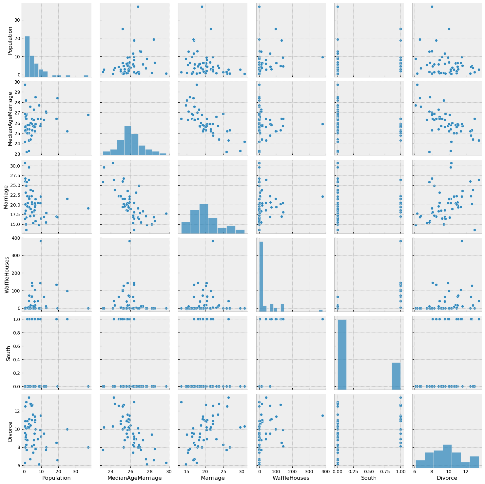
From the plots above, we can clearly observe that there is a relationship between divorce rates and marriage rates in a state (as might be expected), and also between divorce rates and median age of marriage.
There is also a weak relationship between number of Waffle Houses and divorce rates, which is not obvious from the plot above, but will be clearer if we regress Divorce against WaffleHouse and plot the results.
sns.regplot(x="WaffleHouses", y="Divorce", data=dset);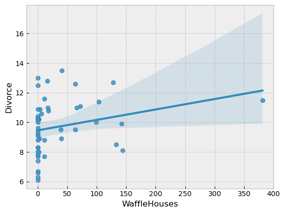
This is an example of a spurious association. We do not expect the number of Waffle Houses in a state to affect the divorce rate, but it is likely correlated with other factors that have an effect on the divorce rate. We will not delve into this spurious association in this tutorial, but the interested reader is encouraged to read Chapters 5 and 6 of [1] which explores the problem of causal association in the presence of multiple predictors.
For simplicity, we will primarily focus on marriage rate and the median age of marriage as our predictors for divorce rate throughout the remaining tutorial.
Let us now write a regressionn model in NumPyro to predict the divorce rate as a linear function of marriage rate and median age of marriage in each of the states.
First, note that our predictor variables have somewhat different scales. It is a good practice to standardize our predictors and response variables to mean 0 and standard deviation 1, which should result in faster inference.
def standardize(x):
return (x - x.mean()) / x.std()
dset["AgeScaled"] = dset.MedianAgeMarriage.pipe(standardize)
dset["MarriageScaled"] = dset.Marriage.pipe(standardize)
dset["DivorceScaled"] = dset.Divorce.pipe(standardize)We write the NumPyro model as follows. While the code should largely be self-explanatory, take note of the following:
sample. These primitives can be interpreted with various side-effects using effect handlers. For more on effect handlers, refer to [3], [4]. For now, just remember that a sample statement makes this a stochastic function that samples some latent parameters from a prior distribution. Our goal is to infer the posterior distribution of these parameters conditioned on observed data.def model(marriage=None, age=None, divorce=None):
a = numpyro.sample("a", dist.Normal(0.0, 0.2))
M, A = 0.0, 0.0
if marriage is not None:
bM = numpyro.sample("bM", dist.Normal(0.0, 0.5))
M = bM * marriage
if age is not None:
bA = numpyro.sample("bA", dist.Normal(0.0, 0.5))
A = bA * age
sigma = numpyro.sample("sigma", dist.Exponential(1.0))
mu = a + M + A
numpyro.sample("obs", dist.Normal(mu, sigma), obs=divorce)We first try to model the divorce rate as depending on a single variable, marriage rate. As mentioned above, we can use the same model code as earlier, but only pass values for marriage and divorce keyword arguments. We will use the No U-Turn Sampler (see [5] for more details on the NUTS algorithm) to run inference on this simple model.
The Hamiltonian Monte Carlo (or, the NUTS) implementation in NumPyro takes in a potential energy function. This is the negative log joint density for the model. Therefore, for our model description above, we need to construct a function which given the parameter values returns the potential energy (or negative log joint density). Additionally, the verlet integrator in HMC (or, NUTS) returns sample values simulated using Hamiltonian dynamics in the unconstrained space. As such, continuous variables with bounded support need to be transformed into unconstrained space using bijective transforms. We also need to transform these samples back to their constrained support before returning these values to the user. Thankfully, this is handled on the backend for us, within a convenience class for doing MCMC inference that has the following methods:
run(...): runs warmup, adapts steps size and mass matrix, and does sampling using the sample from the warmup phase.print_summary(): print diagnostic information like quantiles, effective sample size, and the Gelman-Rubin diagnostic.get_samples(): gets samples from the posterior distribution.Note the following:
NUTS sampler. To run vanilla HMC, we can instead use the HMC class.# Start from this source of randomness. We will split keys for subsequent operations.
rng_key = random.PRNGKey(0)
rng_key, rng_key_ = random.split(rng_key)
# Run NUTS.
kernel = NUTS(model)
num_samples = 2000
mcmc = MCMC(kernel, num_warmup=1000, num_samples=num_samples)
mcmc.run(
rng_key_, marriage=dset.MarriageScaled.values, divorce=dset.DivorceScaled.values
)
mcmc.print_summary()
samples_1 = mcmc.get_samples()sample: 100%|█████████████████████████████████████████████████████████████████████████████████████████████████████████████████████████| 3000/3000 [00:07<00:00, 413.27it/s, 5 steps of size 6.75e-01. acc. prob=0.94]
mean std median 5.0% 95.0% n_eff r_hat
a 0.00 0.11 -0.00 -0.19 0.17 1674.85 1.00
bM 0.35 0.13 0.35 0.14 0.56 1756.94 1.00
sigma 0.95 0.10 0.94 0.79 1.12 1632.67 1.00
Number of divergences: 0inf_data = az.from_numpyro(mcmc)
az.plot_trace(inf_data)array([[<Axes: title={'center': 'a'}>, <Axes: title={'center': 'a'}>],
[<Axes: title={'center': 'bM'}>, <Axes: title={'center': 'bM'}>],
[<Axes: title={'center': 'sigma'}>,
<Axes: title={'center': 'sigma'}>]], dtype=object)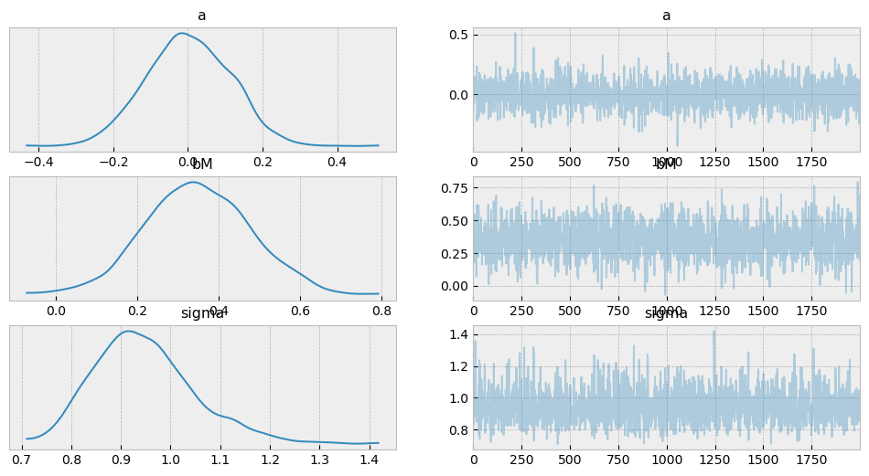
We notice that the progress bar gives us online statistics on the acceptance probability, step size and number of steps taken per sample while running NUTS. In particular, during warmup, we adapt the step size and mass matrix to achieve a certain target acceptance probability which is 0.8, by default. We were able to successfully adapt our step size to achieve this target in the warmup phase.
During warmup, the aim is to adapt hyper-parameters such as step size and mass matrix (the HMC algorithm is very sensitive to these hyper-parameters), and to reach the typical set (see [6] for more details). If there are any issues in the model specification, the first signal to notice would be low acceptance probabilities or very high number of steps. We use the sample from the end of the warmup phase to seed the MCMC chain (denoted by the second sample progress bar) from which we generate the desired number of samples from our target distribution.
At the end of inference, NumPyro prints the mean, std and 90% CI values for each of the latent parameters. Note that since we standardized our predictors and response variable, we would expect the intercept to have mean 0, as can be seen here. It also prints other convergence diagnostics on the latent parameters in the model, including effective sample size and the gelman rubin diagnostic (\(\hat{R}\)). The value for these diagnostics indicates that the chain has converged to the target distribution. In our case, the “target distribution” is the posterior distribution over the latent parameters that we are interested in. Note that this is often worth verifying with multiple chains for more complicated models. In the end, samples_1 is a collection (in our case, a dict since init_samples was a dict) containing samples from the posterior distribution for each of the latent parameters in the model.
To look at our regression fit, let us plot the regression line using our posterior estimates for the regression parameters, along with the 90% Credibility Interval (CI). Note that the hpdi function in NumPyro’s diagnostics module can be used to compute CI. In the functions below, note that the collected samples from the posterior are all along the leading axis.
def plot_regression(x, y_mean, y_hpdi):
# Sort values for plotting by x axis
idx = jnp.argsort(x)
marriage = x[idx]
mean = y_mean[idx]
hpdi = y_hpdi[:, idx]
divorce = dset.DivorceScaled.values[idx]
# Plot
fig, ax = plt.subplots(nrows=1, ncols=1, figsize=(6, 6))
ax.plot(marriage, mean)
ax.plot(marriage, divorce, "o")
ax.fill_between(marriage, hpdi[0], hpdi[1], alpha=0.3, interpolate=True)
return ax
# Compute empirical posterior distribution over mu
posterior_mu = (
jnp.expand_dims(samples_1["a"], -1)
+ jnp.expand_dims(samples_1["bM"], -1) * dset.MarriageScaled.values
)
mean_mu = jnp.mean(posterior_mu, axis=0)
hpdi_mu = hpdi(posterior_mu, 0.9)
ax = plot_regression(dset.MarriageScaled.values, mean_mu, hpdi_mu)
ax.set(
xlabel="Marriage rate", ylabel="Divorce rate", title="Regression line with 90% CI"
);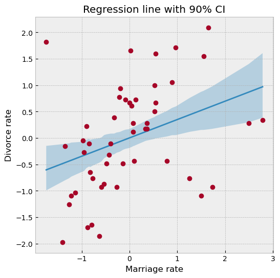
We can see from the plot, that the CI broadens towards the tails where the data is relatively sparse, as can be expected.
Let us check that we have set sensible priors by sampling from the prior predictive distribution. NumPyro provides a handy Predictive utility for this purpose.
from numpyro.infer import Predictive
rng_key, rng_key_ = random.split(rng_key)
prior_predictive = Predictive(model, num_samples=100)
prior_predictions = prior_predictive(rng_key_, marriage=dset.MarriageScaled.values)[
"obs"
]
mean_prior_pred = jnp.mean(prior_predictions, axis=0)
hpdi_prior_pred = hpdi(prior_predictions, 0.9)
ax = plot_regression(dset.MarriageScaled.values, mean_prior_pred, hpdi_prior_pred)
ax.set(xlabel="Marriage rate", ylabel="Divorce rate", title="Predictions with 90% CI");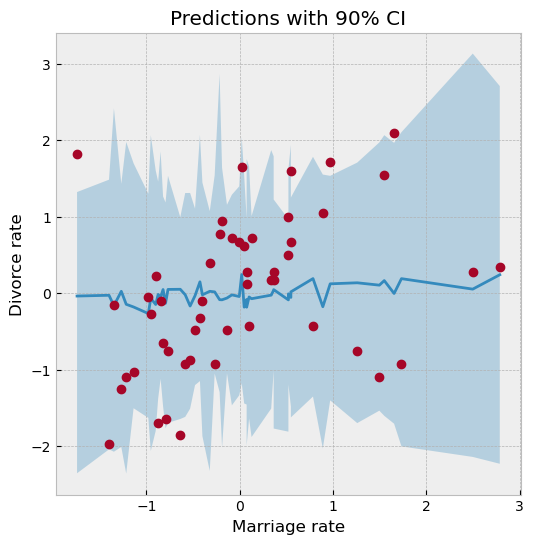
Note that for Predictive to work as expected, the response variable of the model (in this case, divorce) must be set to None. In the code above this is done implicitly by not passing a value for divorce to the model in the call to prior_predictive, which due to the model definition, sets divorce=None.
Let us now look at the posterior predictive distribution to see how our predictive distribution looks with respect to the observed divorce rates. To get samples from the posterior predictive distribution, we need to run the model by substituting the latent parameters with samples from the posterior. Note that by default we generate a single prediction for each sample from the joint posterior distribution, but this can be controlled using the num_samples argument.
rng_key, rng_key_ = random.split(rng_key)
predictive = Predictive(model, samples_1)
predictions = predictive(rng_key_, marriage=dset.MarriageScaled.values)["obs"]
df = dset.filter(["Location"])
df["Mean Predictions"] = jnp.mean(predictions, axis=0)
df.head()| Location | Mean Predictions | |
|---|---|---|
| 0 | Alabama | 0.014285 |
| 1 | Alaska | 0.496625 |
| 2 | Arizona | 0.022891 |
| 3 | Arkansas | 0.597575 |
| 4 | California | -0.087638 |
To remove the magic behind Predictive, let us see how we can combine effect handlers with the vmap JAX primitive to implement our own simplified predictive utility function that can do vectorized predictions.
def predict(rng_key, post_samples, model, *args, **kwargs):
model = handlers.seed(handlers.condition(model, post_samples), rng_key)
model_trace = handlers.trace(model).get_trace(*args, **kwargs)
return model_trace["obs"]["value"]
# vectorize predictions via vmap
predict_fn = vmap(
lambda rng_key, samples: predict(
rng_key, samples, model, marriage=dset.MarriageScaled.values
)
)Note the use of the condition, seed and trace effect handlers in the predict function.
seed effect-handler is used to wrap a stochastic function with an initial PRNGKey seed. When a sample statement inside the model is called, it uses the existing seed to sample from a distribution but this effect-handler also splits the existing key to ensure that future sample calls in the model use the newly split key instead. This is to prevent us from having to explicitly pass in a PRNGKey to each sample statement in the model.condition effect handler conditions the latent sample sites to certain values. In our case, we are conditioning on values from the posterior distribution returned by MCMC.trace effect handler runs the model and records the execution trace within an OrderedDict. This trace object contains execution metadata that is useful for computing quantities such as the log joint density.It should be clear now that the predict function simply runs the model by substituting the latent parameters with samples from the posterior (generated by the mcmc function) to generate predictions. Note the use of JAX’s auto-vectorization transform called vmap to vectorize predictions. Note that if we didn’t use vmap, we would have to use a native for loop which for each sample which is much slower. Each draw from the posterior can be used to get predictions over all the 50 states. When we vectorize this over all the samples from the posterior using vmap, we will get a predictions_1 array of shape (num_samples, 50). We can then compute the mean and 90% CI of these samples to plot the posterior predictive distribution. We note that our mean predictions match those obtained from the Predictive utility class.
# Using the same key as we used for Predictive - note that the results are identical.
predictions_1 = predict_fn(random.split(rng_key_, num_samples), samples_1)
mean_pred = jnp.mean(predictions_1, axis=0)
df = dset.filter(["Location"])
df["Mean Predictions"] = mean_pred
df.head()| Location | Mean Predictions | |
|---|---|---|
| 0 | Alabama | 0.014285 |
| 1 | Alaska | 0.496625 |
| 2 | Arizona | 0.022891 |
| 3 | Arkansas | 0.597575 |
| 4 | California | -0.087638 |
hpdi_pred = hpdi(predictions_1, 0.9)
ax = plot_regression(dset.MarriageScaled.values, mean_pred, hpdi_pred)
ax.set(xlabel="Marriage rate", ylabel="Divorce rate", title="Predictions with 90% CI");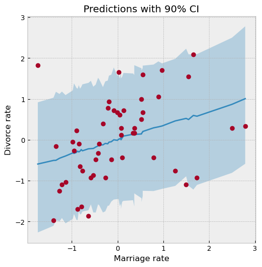
We have used the same plot_regression function as earlier. We notice that our CI for the predictive distribution is much broader as compared to the last plot due to the additional noise introduced by the sigma parameter. Most data points lie well within the 90% CI, which indicates a good fit.
Likewise, making use of effect-handlers and vmap, we can also compute the log likelihood for this model given the dataset, and the log posterior predictive density [6] which is given by
\(log \prod_{i=1}^{n} \int p(y_i | \theta) p_{post}(\theta) d\theta \approx \sum_{i=1}^n log \frac{\sum_s p(\theta^{s})}{S} \\ = \sum_{i=1}^n (log \sum_s p(\theta^{s}) - log(S))\).
Here, \(i\) indexes the observed data points \(y\) and \(s\) indexes the posterior samples over the latent parameters \(\theta\). If the posterior predictive density for a model has a comparatively high value, it indicates that the observed data-points have higher probability under the given model.
def log_likelihood(rng_key, params, model, *args, **kwargs):
model = handlers.condition(model, params)
model_trace = handlers.trace(model).get_trace(*args, **kwargs)
obs_node = model_trace["obs"]
return obs_node["fn"].log_prob(obs_node["value"])
def log_pred_density(rng_key, params, model, *args, **kwargs):
n = list(params.values())[0].shape[0]
log_lk_fn = vmap(
lambda rng_key, params: log_likelihood(rng_key, params, model, *args, **kwargs)
)
log_lk_vals = log_lk_fn(random.split(rng_key, n), params)
return (logsumexp(log_lk_vals, 0) - jnp.log(n)).sum()Note that NumPyro provides the log_likelihood utility function that can be used directly for computing log likelihood as in the first function for any general model. In this tutorial, we would like to emphasize that there is nothing magical about such utility functions, and you can roll out your own inference utilities using NumPyro’s effect handling stack.
rng_key, rng_key_ = random.split(rng_key)
print(
"Log posterior predictive density: {}".format(
log_pred_density(
rng_key_,
samples_1,
model,
marriage=dset.MarriageScaled.values,
divorce=dset.DivorceScaled.values,
)
)
)Log posterior predictive density: -66.7168197631836We will now model the divorce rate as a function of the median age of marriage. The computations are mostly a reproduction of what we did for Model 1. Notice the following:
rng_key, rng_key_ = random.split(rng_key)
mcmc.run(rng_key_, age=dset.AgeScaled.values, divorce=dset.DivorceScaled.values)
mcmc.print_summary()
samples_2 = mcmc.get_samples()sample: 100%|█████████████████████████████████████████████████████████████████████████████████████████████████████████████████████████| 3000/3000 [00:06<00:00, 443.72it/s, 7 steps of size 7.58e-01. acc. prob=0.92]
mean std median 5.0% 95.0% n_eff r_hat
a -0.00 0.10 -0.00 -0.17 0.16 1905.88 1.00
bA -0.57 0.11 -0.57 -0.76 -0.38 1916.53 1.00
sigma 0.82 0.08 0.82 0.69 0.96 1780.31 1.00
Number of divergences: 0posterior_mu = (
jnp.expand_dims(samples_2["a"], -1)
+ jnp.expand_dims(samples_2["bA"], -1) * dset.AgeScaled.values
)
mean_mu = jnp.mean(posterior_mu, axis=0)
hpdi_mu = hpdi(posterior_mu, 0.9)
ax = plot_regression(dset.AgeScaled.values, mean_mu, hpdi_mu)
ax.set(
xlabel="Median marriage age",
ylabel="Divorce rate",
title="Regression line with 90% CI",
);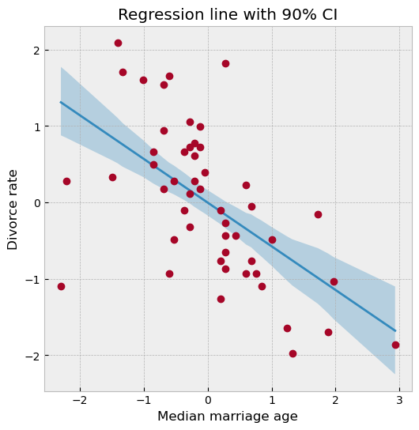
rng_key, rng_key_ = random.split(rng_key)
predictions_2 = Predictive(model, samples_2)(rng_key_, age=dset.AgeScaled.values)["obs"]
mean_pred = jnp.mean(predictions_2, axis=0)
hpdi_pred = hpdi(predictions_2, 0.9)
ax = plot_regression(dset.AgeScaled.values, mean_pred, hpdi_pred)
ax.set(xlabel="Median Age", ylabel="Divorce rate", title="Predictions with 90% CI");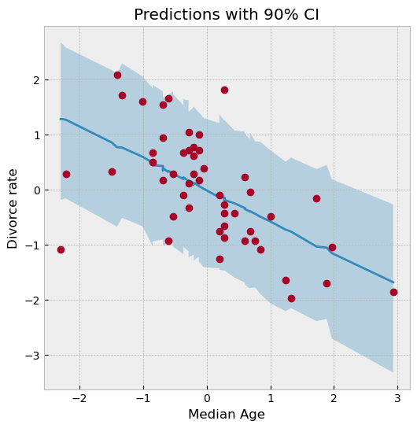
rng_key, rng_key_ = random.split(rng_key)
print(
"Log posterior predictive density: {}".format(
log_pred_density(
rng_key_,
samples_2,
model,
age=dset.AgeScaled.values,
divorce=dset.DivorceScaled.values,
)
)
)Log posterior predictive density: -59.260459899902344Finally, we will also model divorce rate as depending on both marriage rate as well as the median age of marriage. Note that the model’s posterior predictive density is similar to Model 2 which likely indicates that the marginal information from marriage rate in predicting divorce rate is low when the median age of marriage is already known.
rng_key, rng_key_ = random.split(rng_key)
mcmc.run(
rng_key_,
marriage=dset.MarriageScaled.values,
age=dset.AgeScaled.values,
divorce=dset.DivorceScaled.values,
)
mcmc.print_summary()
samples_3 = mcmc.get_samples()sample: 100%|█████████████████████████████████████████████████████████████████████████████████████████████████████████████████████████| 3000/3000 [00:08<00:00, 354.73it/s, 7 steps of size 6.74e-01. acc. prob=0.88]
mean std median 5.0% 95.0% n_eff r_hat
a 0.00 0.10 0.00 -0.17 0.16 1530.81 1.00
bA -0.60 0.16 -0.61 -0.88 -0.37 1357.43 1.00
bM -0.06 0.16 -0.06 -0.34 0.18 1336.47 1.00
sigma 0.83 0.08 0.82 0.68 0.95 1399.60 1.00
Number of divergences: 0rng_key, rng_key_ = random.split(rng_key)
print(
"Log posterior predictive density: {}".format(
log_pred_density(
rng_key_,
samples_3,
model,
marriage=dset.MarriageScaled.values,
age=dset.AgeScaled.values,
divorce=dset.DivorceScaled.values,
)
)
)Log posterior predictive density: -59.03181457519531The regression plots above shows that the observed divorce rates for many states differs considerably from the mean regression line. To dig deeper into how the last model (Model 3) under-predicts or over-predicts for each of the states, we will plot the posterior predictive and residuals (Observed divorce rate - Predicted divorce rate) for each of the states.
# Predictions for Model 3.
rng_key, rng_key_ = random.split(rng_key)
predictions_3 = Predictive(model, samples_3)(
rng_key_, marriage=dset.MarriageScaled.values, age=dset.AgeScaled.values
)["obs"]
y = jnp.arange(50)
fig, ax = plt.subplots(nrows=1, ncols=2, figsize=(12, 16))
pred_mean = jnp.mean(predictions_3, axis=0)
pred_hpdi = hpdi(predictions_3, 0.9)
residuals_3 = dset.DivorceScaled.values - predictions_3
residuals_mean = jnp.mean(residuals_3, axis=0)
residuals_hpdi = hpdi(residuals_3, 0.9)
idx = jnp.argsort(residuals_mean)
# Plot posterior predictive
ax[0].plot(jnp.zeros(50), y, "--")
ax[0].errorbar(
pred_mean[idx],
y,
xerr=pred_hpdi[1, idx] - pred_mean[idx],
marker="o",
ms=5,
mew=4,
ls="none",
alpha=0.8,
)
ax[0].plot(dset.DivorceScaled.values[idx], y, marker="o", ls="none", color="gray")
ax[0].set(
xlabel="Posterior Predictive (red) vs. Actuals (gray)",
ylabel="State",
title="Posterior Predictive with 90% CI",
)
ax[0].set_yticks(y)
ax[0].set_yticklabels(dset.Loc.values[idx], fontsize=10)
# Plot residuals
residuals_3 = dset.DivorceScaled.values - predictions_3
residuals_mean = jnp.mean(residuals_3, axis=0)
residuals_hpdi = hpdi(residuals_3, 0.9)
err = residuals_hpdi[1] - residuals_mean
ax[1].plot(jnp.zeros(50), y, "--")
ax[1].errorbar(
residuals_mean[idx], y, xerr=err[idx], marker="o", ms=5, mew=4, ls="none", alpha=0.8
)
ax[1].set(xlabel="Residuals", ylabel="State", title="Residuals with 90% CI")
ax[1].set_yticks(y)
ax[1].set_yticklabels(dset.Loc.values[idx], fontsize=10);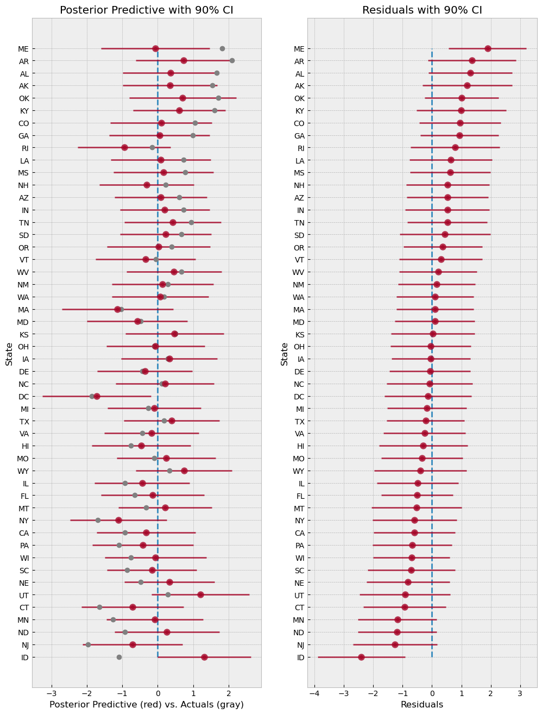
The plot on the left shows the mean predictions with 90% CI for each of the states using Model 3. The gray markers indicate the actual observed divorce rates. The right plot shows the residuals for each of the states, and both these plots are sorted by the residuals, i.e. at the bottom, we are looking at states where the model predictions are higher than the observed rates, whereas at the top, the reverse is true.
Overall, the model fit seems good because most observed data points like within a 90% CI around the mean predictions. However, notice how the model over-predicts by a large margin for states like Idaho (bottom left), and on the other end under-predicts for states like Maine (top right). This is likely indicative of other factors that we are missing out in our model that affect divorce rate across different states. Even ignoring other socio-political variables, one such factor that we have not yet modeled is the measurement noise given by Divorce SE in the dataset. We will explore this in the next section.
Note that in our previous models, each data point influences the regression line equally. Is this well justified? We will build on the previous model to incorporate measurement error given by Divorce SE variable in the dataset. Incorporating measurement noise will be useful in ensuring that observations that have higher confidence (i.e. lower measurement noise) have a greater impact on the regression line. On the other hand, this will also help us better model outliers with high measurement errors. For more details on modeling errors due to measurement noise, refer to Chapter 14 of [1].
To do this, we will reuse Model 3, with the only change that the final observed value has a measurement error given by divorce_sd (notice that this has to be standardized since the divorce variable itself has been standardized to mean 0 and std 1).
def model_se(marriage, age, divorce_sd, divorce=None):
a = numpyro.sample("a", dist.Normal(0.0, 0.2))
bM = numpyro.sample("bM", dist.Normal(0.0, 0.5))
M = bM * marriage
bA = numpyro.sample("bA", dist.Normal(0.0, 0.5))
A = bA * age
sigma = numpyro.sample("sigma", dist.Exponential(1.0))
mu = a + M + A
divorce_rate = numpyro.sample("divorce_rate", dist.Normal(mu, sigma))
numpyro.sample("obs", dist.Normal(divorce_rate, divorce_sd), obs=divorce)# Standardize
dset["DivorceScaledSD"] = dset["Divorce SE"] / jnp.std(dset.Divorce.values)rng_key, rng_key_ = random.split(rng_key)
kernel = NUTS(model_se, target_accept_prob=0.9)
mcmc = MCMC(kernel, num_warmup=1000, num_samples=3000)
mcmc.run(
rng_key_,
marriage=dset.MarriageScaled.values,
age=dset.AgeScaled.values,
divorce_sd=dset.DivorceScaledSD.values,
divorce=dset.DivorceScaled.values,
)
mcmc.print_summary()
samples_4 = mcmc.get_samples()sample: 100%|████████████████████████████████████████████████████████████████████████████████████████████████████████████████████████| 4000/4000 [00:19<00:00, 203.63it/s, 15 steps of size 2.36e-01. acc. prob=0.95]
mean std median 5.0% 95.0% n_eff r_hat
a -0.06 0.10 -0.06 -0.21 0.10 2508.60 1.00
bA -0.61 0.16 -0.61 -0.88 -0.36 1812.45 1.00
bM 0.06 0.17 0.06 -0.21 0.33 1690.18 1.00
divorce_rate[0] 1.16 0.37 1.16 0.52 1.73 2578.75 1.00
divorce_rate[1] 0.68 0.55 0.67 -0.19 1.63 3483.12 1.00
divorce_rate[2] 0.43 0.35 0.43 -0.14 0.99 3739.98 1.00
divorce_rate[3] 1.41 0.46 1.41 0.65 2.12 3901.74 1.00
divorce_rate[4] -0.90 0.13 -0.90 -1.13 -0.71 3962.34 1.00
divorce_rate[5] 0.65 0.39 0.64 -0.03 1.26 3636.40 1.00
divorce_rate[6] -1.36 0.34 -1.35 -1.93 -0.80 4218.01 1.00
divorce_rate[7] -0.34 0.50 -0.34 -1.16 0.44 3539.44 1.00
divorce_rate[8] -1.88 0.58 -1.90 -2.78 -0.86 2758.61 1.00
divorce_rate[9] -0.62 0.17 -0.62 -0.89 -0.34 4278.66 1.00
divorce_rate[10] 0.76 0.29 0.76 0.31 1.27 3220.41 1.00
divorce_rate[11] -0.54 0.50 -0.54 -1.35 0.30 3241.35 1.00
divorce_rate[12] 0.19 0.52 0.20 -0.69 1.00 1869.19 1.00
divorce_rate[13] -0.87 0.23 -0.87 -1.25 -0.52 4476.71 1.00
divorce_rate[14] 0.55 0.30 0.55 0.07 1.03 5460.52 1.00
divorce_rate[15] 0.28 0.38 0.27 -0.32 0.94 3954.53 1.00
divorce_rate[16] 0.49 0.43 0.50 -0.21 1.19 3947.45 1.00
divorce_rate[17] 1.25 0.35 1.24 0.66 1.79 3944.93 1.00
divorce_rate[18] 0.42 0.37 0.42 -0.18 1.03 4120.68 1.00
divorce_rate[19] 0.38 0.54 0.36 -0.53 1.24 2068.42 1.00
divorce_rate[20] -0.56 0.34 -0.56 -1.10 -0.00 5683.67 1.00
divorce_rate[21] -1.10 0.27 -1.10 -1.53 -0.66 4441.69 1.00
divorce_rate[22] -0.28 0.26 -0.27 -0.73 0.12 5831.89 1.00
divorce_rate[23] -0.99 0.30 -0.99 -1.47 -0.51 3374.19 1.00
divorce_rate[24] 0.43 0.41 0.42 -0.22 1.13 2986.80 1.00
divorce_rate[25] -0.03 0.32 -0.03 -0.57 0.49 4326.73 1.00
divorce_rate[26] -0.01 0.50 -0.01 -0.81 0.81 3596.61 1.00
divorce_rate[27] -0.16 0.38 -0.15 -0.78 0.48 3901.82 1.00
divorce_rate[28] -0.27 0.49 -0.28 -1.06 0.56 3362.90 1.00
divorce_rate[29] -1.79 0.24 -1.79 -2.17 -1.39 3964.69 1.00
divorce_rate[30] 0.17 0.42 0.17 -0.51 0.86 4752.21 1.00
divorce_rate[31] -1.66 0.16 -1.66 -1.93 -1.39 5143.47 1.00
divorce_rate[32] 0.12 0.25 0.12 -0.30 0.50 4703.77 1.00
divorce_rate[33] -0.05 0.53 -0.04 -0.88 0.84 2781.98 1.00
divorce_rate[34] -0.13 0.23 -0.13 -0.49 0.25 3995.42 1.00
divorce_rate[35] 1.27 0.42 1.26 0.55 1.92 4311.02 1.00
divorce_rate[36] 0.22 0.36 0.22 -0.38 0.79 3971.03 1.00
divorce_rate[37] -1.02 0.23 -1.02 -1.39 -0.65 5354.76 1.00
divorce_rate[38] -0.93 0.54 -0.94 -1.84 -0.12 3034.56 1.00
divorce_rate[39] -0.67 0.34 -0.67 -1.21 -0.13 4096.94 1.00
divorce_rate[40] 0.25 0.56 0.24 -0.67 1.18 3843.19 1.00
divorce_rate[41] 0.73 0.34 0.73 0.16 1.28 3481.02 1.00
divorce_rate[42] 0.20 0.18 0.19 -0.10 0.50 4692.71 1.00
divorce_rate[43] 0.81 0.42 0.82 0.17 1.54 2337.95 1.00
divorce_rate[44] -0.42 0.51 -0.43 -1.24 0.46 3695.75 1.00
divorce_rate[45] -0.39 0.25 -0.40 -0.80 0.02 4477.64 1.00
divorce_rate[46] 0.13 0.30 0.13 -0.36 0.63 4997.99 1.00
divorce_rate[47] 0.56 0.47 0.55 -0.21 1.29 3648.61 1.00
divorce_rate[48] -0.63 0.28 -0.63 -1.11 -0.20 4900.96 1.00
divorce_rate[49] 0.86 0.58 0.86 -0.05 1.83 2321.32 1.00
sigma 0.58 0.11 0.58 0.41 0.75 896.25 1.00
Number of divergences: 0Notice that our values for the regression coefficients is very similar to Model 3. However, introducing measurement noise allows us to more closely match our predictive distribution to the observed values. We can see this if we plot the residuals as earlier.
rng_key, rng_key_ = random.split(rng_key)
predictions_4 = Predictive(model_se, samples_4)(
rng_key_,
marriage=dset.MarriageScaled.values,
age=dset.AgeScaled.values,
divorce_sd=dset.DivorceScaledSD.values,
)["obs"]sd = dset.DivorceScaledSD.values
residuals_4 = dset.DivorceScaled.values - predictions_4
residuals_mean = jnp.mean(residuals_4, axis=0)
residuals_hpdi = hpdi(residuals_4, 0.9)
err = residuals_hpdi[1] - residuals_mean
idx = jnp.argsort(residuals_mean)
y = jnp.arange(50)
fig, ax = plt.subplots(nrows=1, ncols=1, figsize=(6, 16))
# Plot Residuals
ax.plot(jnp.zeros(50), y, "--")
ax.errorbar(
residuals_mean[idx], y, xerr=err[idx], marker="o", ms=5, mew=4, ls="none", alpha=0.8
)
# Plot SD
ax.errorbar(residuals_mean[idx], y, xerr=sd[idx], ls="none", color="orange", alpha=0.9)
# Plot earlier mean residual
ax.plot(
jnp.mean(dset.DivorceScaled.values - predictions_3, 0)[idx],
y,
ls="none",
marker="o",
ms=6,
color="black",
alpha=0.6,
)
ax.set(xlabel="Residuals", ylabel="State", title="Residuals with 90% CI")
ax.set_yticks(y)
ax.set_yticklabels(dset.Loc.values[idx], fontsize=10)
ax.text(
-2.8,
-7,
"Residuals (with error-bars) from current model (in red). "
"Black marker \nshows residuals from the previous model (Model 3). "
"Measurement \nerror is indicated by orange bar.",
);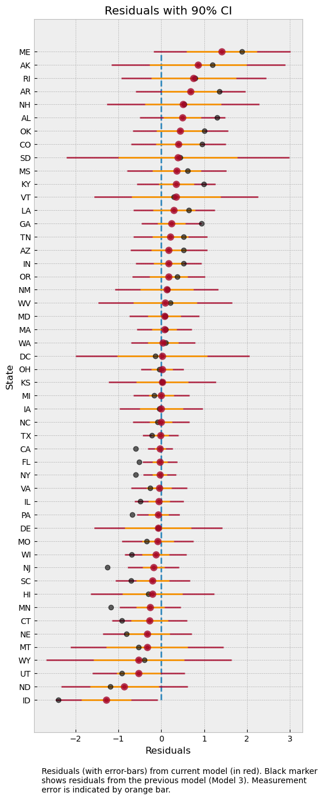
The plot above shows the residuals for each of the states, along with the measurement noise given by inner error bar. The gray dots are the mean residuals from our earlier Model 3. Notice how having an additional degree of freedom to model the measurement noise has shrunk the residuals. In particular, for Idaho and Maine, our predictions are now much closer to the observed values after incorporating measurement noise in the model.
To better see how measurement noise affects the movement of the regression line, let us plot the residuals with respect to the measurement noise.
fig, ax = plt.subplots(nrows=1, ncols=1, figsize=(10, 6))
x = dset.DivorceScaledSD.values
y1 = jnp.mean(residuals_3, 0)
y2 = jnp.mean(residuals_4, 0)
ax.plot(x, y1, ls="none", marker="o")
ax.plot(x, y2, ls="none", marker="o")
for i, (j, k) in enumerate(zip(y1, y2)):
ax.plot([x[i], x[i]], [j, k], "--", color="gray")
ax.set(
xlabel="Measurement Noise",
ylabel="Residual",
title="Mean residuals (Model 4: red, Model 3: blue)",
);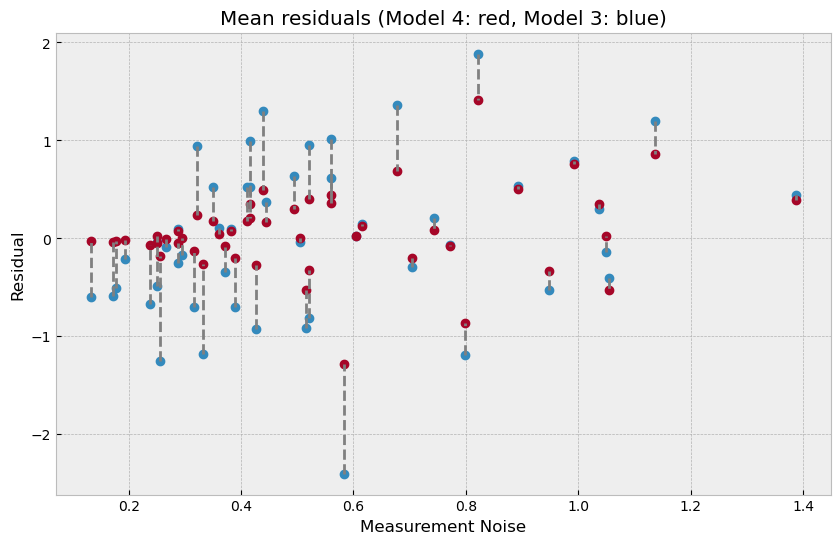
The plot above shows what has happend in more detail - the regression line itself has moved to ensure a better fit for observations with low measurement noise (left of the plot) where the residuals have shrunk very close to 0. That is to say that data points with low measurement error have a concomitantly higher contribution in determining the regression line. On the other hand, for states with high measurement error (right of the plot), incorporating measurement noise allows us to move our posterior distribution mass closer to the observations resulting in a shrinkage of residuals as well.
Hamiltonian Monte Carlo (and by extension NUTS) work by computing a potential function (which represents how unlikely it is for a set of parameters to give rise to the data) and repeatedly evaluating the gradient of this potential function as the Monte Carlo run progresses. In most cases, the evaluation of this gradient is (by far) the most expensive part of the algorithm, so it is useful to know how many times this gradient has been evaluated. This can be done by setting extra_fields="num_steps" when calling mcmc.run.
To count the number of gradient evaluations used in the warmup phase as well, we must also set collect_warmup=True when calling mcmc.warmup.
rng_key = random.PRNGKey(0)
rng_key, rng_key_ = random.split(rng_key)
# Run NUTS.
kernel = NUTS(model)
num_samples = 2000
mcmc = MCMC(kernel, num_warmup=1000, num_samples=num_samples)
# First do the warmup, so we count the number of warmup steps as well.
# Do not forget to set `collect_warmup=True`!
mcmc.warmup(
rng_key_,
marriage=dset.MarriageScaled.values,
divorce=dset.DivorceScaled.values,
collect_warmup=True,
extra_fields=("num_steps",),
)
warmup_steps = sum(mcmc.get_extra_fields()["num_steps"])
mcmc.run(
rng_key_,
marriage=dset.MarriageScaled.values,
divorce=dset.DivorceScaled.values,
extra_fields=("num_steps",),
)
total_steps = sum(mcmc.get_extra_fields()["num_steps"]) + warmup_steps
print(
f"Number of warmup steps: {warmup_steps}. Total number of gradient evaluations: {total_steps}"
)warmup: 100%|█████████████████████████████████████████████████████████████████████████████████████████████████████████████████████████| 1000/1000 [00:03<00:00, 309.06it/s, 1 steps of size 6.75e-01. acc. prob=0.79]
sample: 100%|█████████████████████████████████████████████████████████████████████████████████████████████████████████████████████████| 2000/2000 [00:05<00:00, 377.44it/s, 7 steps of size 6.75e-01. acc. prob=0.94]Number of warmup steps: 4529. Total number of gradient evaluations: 15611